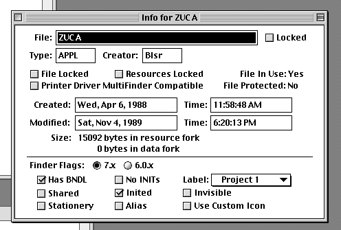
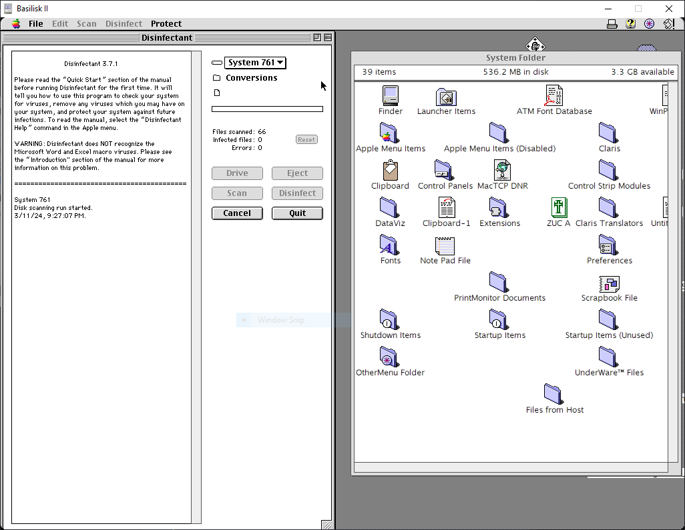
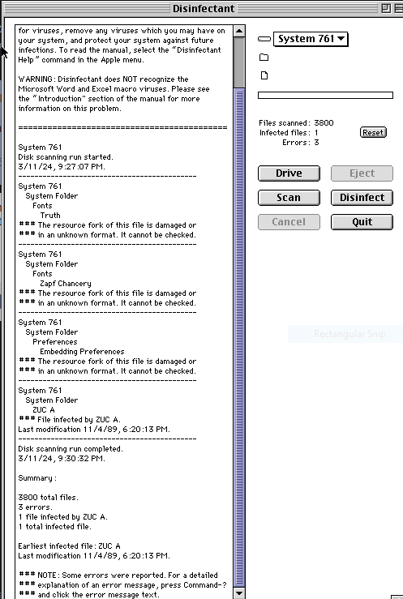

Trying Zuc
Getting Zuc to work was way much easier than my attempt are trying to get Scores to work. It came on a very obvious infected program.
The icon is of the infected program...
Using ResEdit we can see it has an init in its code :P

And the icon is labeled "Blesser icon"

This is the main screen for the infected program that has ZUC on it. A quick search does me give the exact same thing at the Macintosh Repository for this exact program..

Not much interesting stuff when looking at the extra info on it
Running the file brings up this. Clicking cancel closes the program so you don't actually see what is behind the option to pick a folder

After opening the file and clicking around a little bit, we can assume that the infection has begun since we ran the infected program.
After waiting a few minutes, one of Zuc's payloads which is to make the mouse move diagonally when the mosue buttons are clicked are already starting to show.
In fact you can't actually do anything most of the time as your cursor keeps running away. Like you see right now, it is hard to even open the hard disk.
The cursor even bounces if you hold down one of the mouse buttons so it is like the DVD video logo bouncing.
Although not really a cause of the Zuc virus, the largest unused block goes all funny too. I was told this must be a quirk of how the Mac’s memory manager works
Since I am emulating a Mac this may be different on a real machine but restarting the machine makes all of the weird stuff stop.
The scanning starts now :P
And we have the virus detected along with some unrelated errors.
Before you know it the cursor moving away diagonally happened once again as soon as this scan finishes XD.
I guess we can say goodbye to ZUC A as I disinfect the hard disk which in itself was hard because of the moving cursor :')